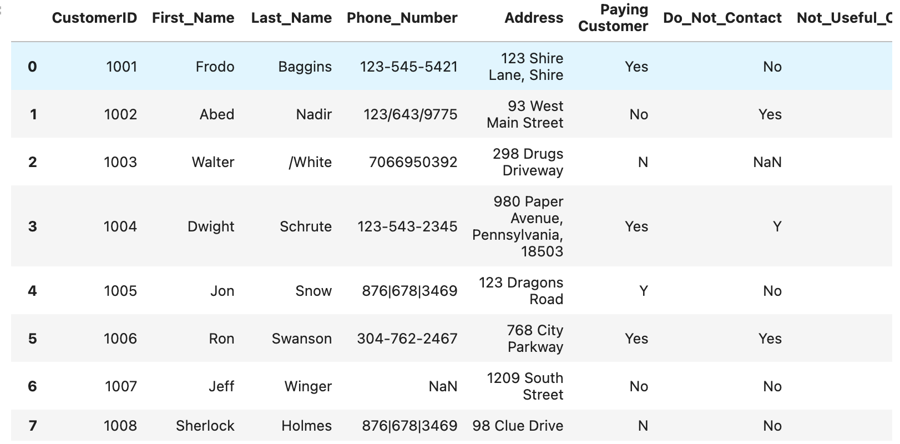
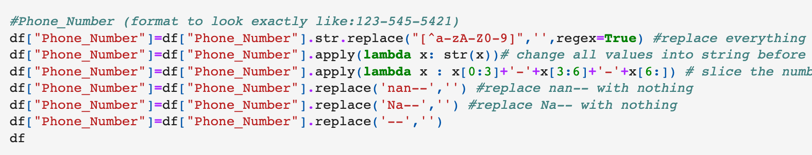
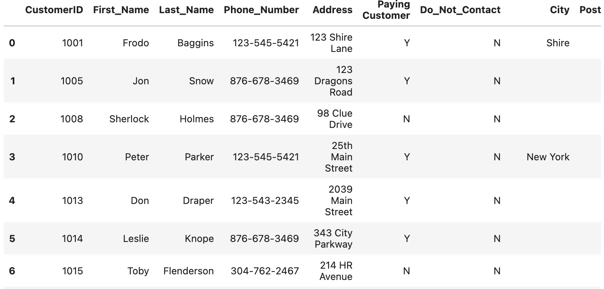
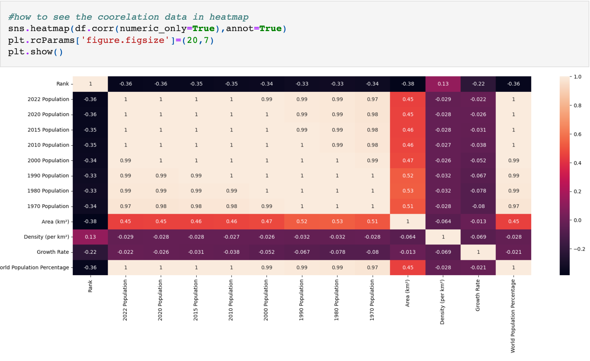
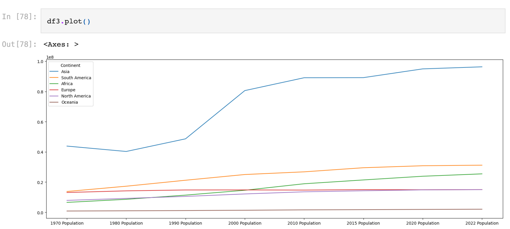
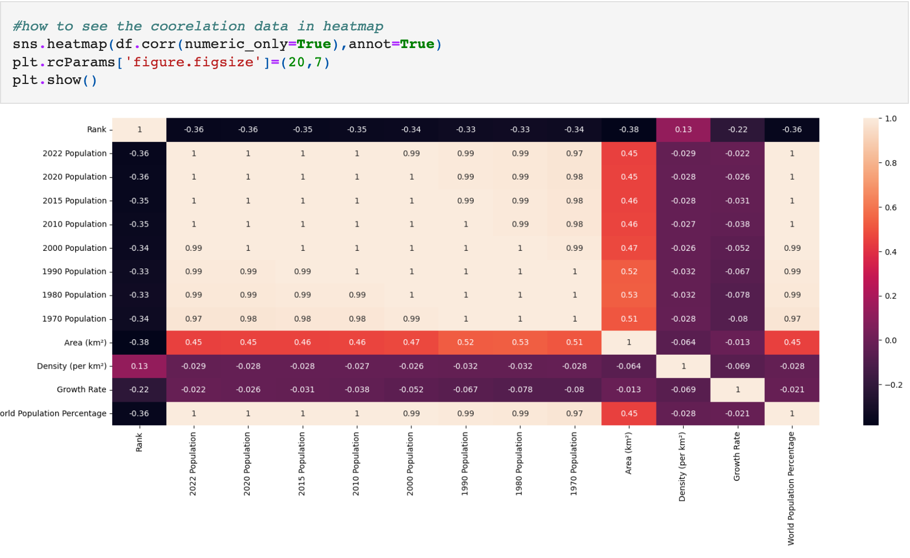
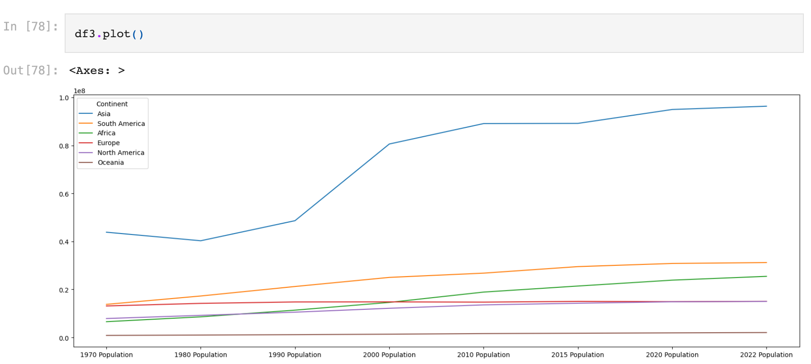
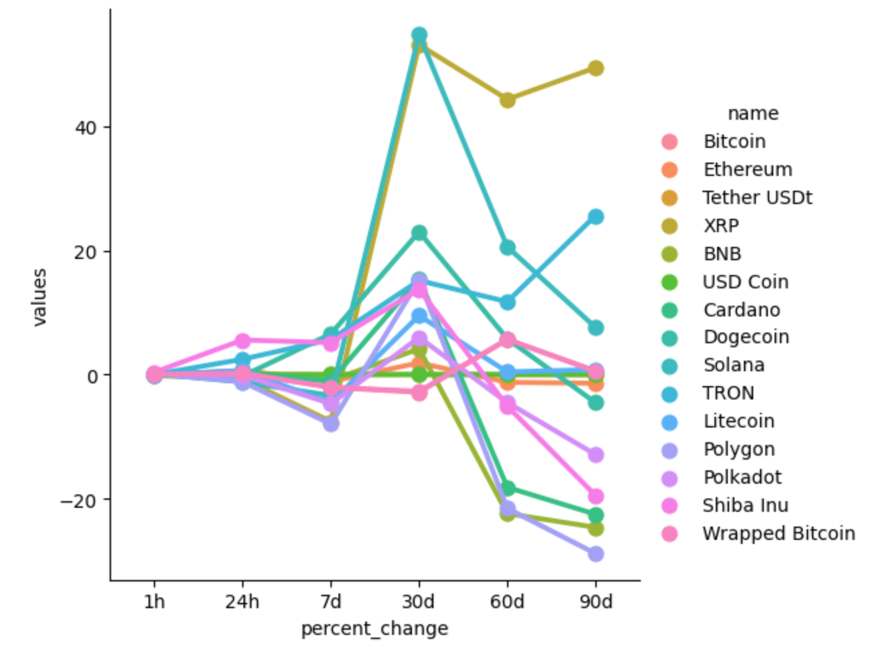

Data Cleaning in Pandas
Data cleaning is a critical phase in the data analysis process, and Python offers a powerful array of tools and libraries to facilitate this crucial task. This is a few example of data explorations.
Before Based on the data above, there are numerous data cleaning tasks that need to be performed, such as reformatting telephone numbers, deleting irrelevant columns, separating city names from the address column along with their postal codes, and addressing minor yet equally important aspects like removing duplicates.
A simple example of data formatting for Phone_Numbers. Click here for full data cleaning on my Github Account
 AfterExploratory Data Analysis in Pandas (Population Growth)
Exploratory Data Analysis (EDA) is an essential and initial step in the data analysis process. It involves examining and summarizing the main characteristics of a dataset to gain insights, detect patterns, identify anomalies, and formulate hypotheses. EDA typically involves key activities such as: Data Cleaning, Data Visualization as well as Summary Statistic.
 This method employs a color-coded system to efficiently ascertain data correlations, where strong positive correlations are represented by the color tan, while no correlation or negative correlation is depicted by the color black.
Utilize a line plot in pandas to visualize the population growth of each continent every decade. This visualization will demonstrate the population trends over time for each continent in a formal and structured manner.
This method employs a color-coded system to efficiently ascertain data correlations, where strong positive correlations are represented by the color tan, while no correlation or negative correlation is depicted by the color black.
Utilize a line plot in pandas to visualize the population growth of each continent every decade. This visualization will demonstrate the population trends over time for each continent in a formal and structured manner.
Automating Crypto Website API Pull Using Python
Pulling data automatically from CoinMarketCap by using it's API key

Automating the pull into CSV (Comma-Separated Values) format, making it easy to visualize using Python or any others data analysis platform.

Data transformation is a crucial step in the data analysis pipeline. It involves manipulating and converting raw data into a more suitable format for analysis or visualization.

Analysing how the Crypto values fluctuate within the timeframe in real live update.
